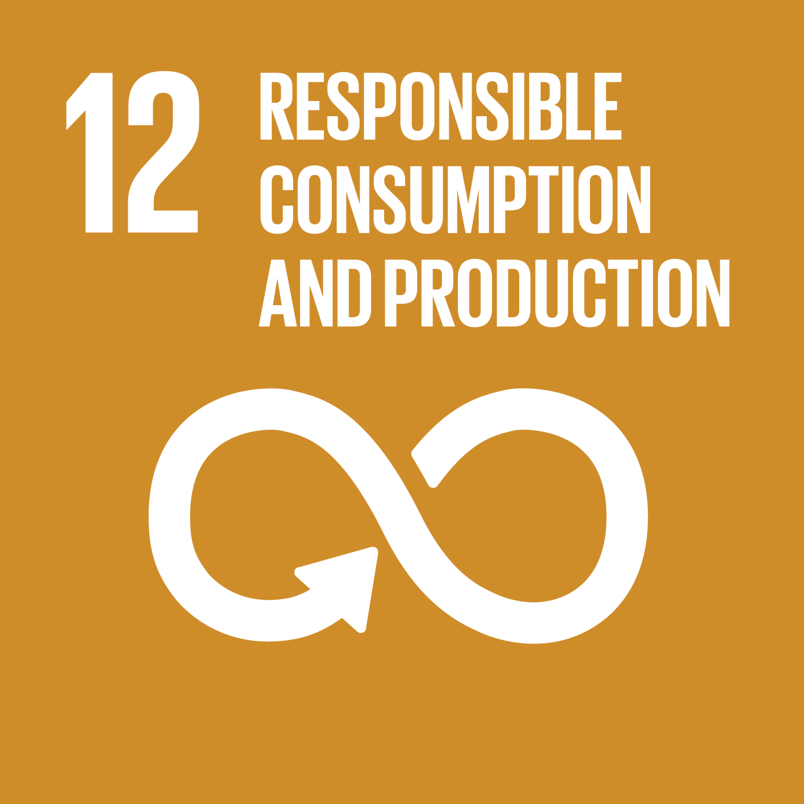

Zero Hunger
We make sure to include majority of ingredients, hence when you have any leftover
ingredients with the help of our website you can make it worthwhile
use it rather
then throw/waste it.

Good Health and Well Being
Our healthy recipe filter advocates well being, by allowing you to stay fit and maintain
your healthy diet with an additional calorie intake count per recipe. We happily help
you cook at home, thus avoiding precooked meals or fast food.
Stay healthy

Responsible Consumption and Production
Ingredients that you did not know where to use, can now be used with the help of our
website. This controls the client to not waste ingredients and also do not buy more when
there is ingredients left over, making them wiser and helping them save money in the
long run.

Climate Action
In overall reduction of food waste and only purchasing an understanble amount of
ingredients, your positive impact on the enviroment is significant!.
The fight
againest waste and enviroment pollution is in our hands.